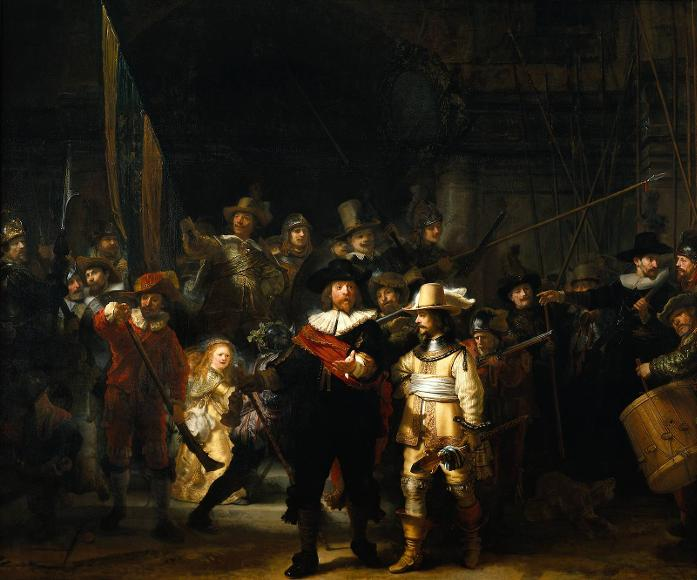
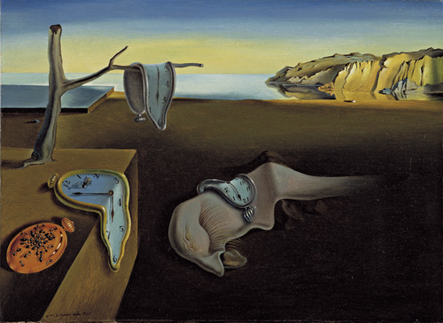

Three Musicians
At first glance it might look like a collage but Pablo Picasso's famous painting, Three Musicians is actually an oil painting. Completed in 1921, he painted two very similar paintings that are mutually referred to as Three Musicians and can be found in the New York MoMA and the Philadelphia Museum of Art.
Guernica

Inspired by the bombing of Guernica, Spain, during the Spanish Civil War, Pablo Picasso completed this most famous piece, Guernica, in 1937. This piece was originally commissioned by the Spanish government and intended to depict the suffering of war and ultimately stand as symbol for peace.
Starry Night

Vincent van Gogh has painted countless well-known pieces; however, his painting Starry Night is widely considered to be his magnum opus. Painted in 1889, the piece was done from memory and whimsically depicts the view from his room at the sanitarium he resided in at the time.
Cafe Terrace at Night

Never one for flashy titles, Cafe Terrace at Night (1888) by the ever-prolific Vincent Van Gogh, is one of the most individual depictions of such a mundane setting. Though Van Gogh never signed this piece, he references his famous Cafe masterpiece in many personal documents.
Mona Lisa

Any list of Most Famous Paintings would be incomplete without the mention of the Mona Lisa by Leonardo da Vinci. This infamous portrait of Lisa del Giocondo was completed some time between 1503-1519 and currently on display at the Musee du Louvre in Paris.
The Scream

Using oil and pastel on cardboard, Edvard Munch painted his most famous piece, The Scream, circa 1893. Featuring a ghoulish figure that looks like the host from Tales from the Crypt, the backdrop of this expressionist painting is said to be Oslo, Norway.
Girl with a Pearl Earring

Considered by some to be the "Mona Lisa of the North," this enchanting painting by the Dutch artist, Johannes Vermeer, features exactly what the title infers - a Girl with a Peal Earring. Completed circa 1665, this piece can now be found in the Mauritshuis Gallery in the Hague.
The Persistence of Memory
Painted in 1931 by yet another Spanish artist, Salvador Dali's The Persistance of Memory is one of the most recognizable and individual pieces in art history. Depicting a dismal shoreline draped with melting clocks, it is thought that Albert Einstein's Theory of Relativity inspired this bizarre piece.
A Sunday Afternoon

Using the unique technique of pointillism, creating a complete image that is made up of only distinct individual dots, the French painter Georges Seurat brings us his most famous piece A Sunday Afternoon on the Island of La Grande Jatte.